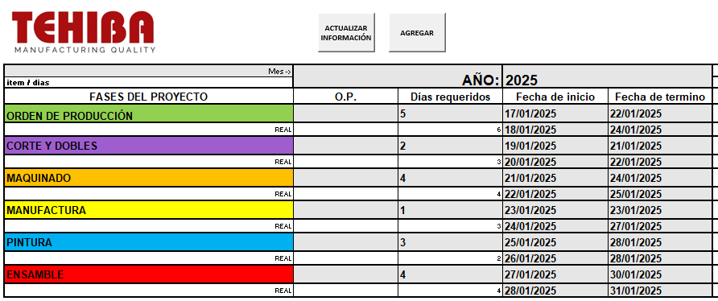
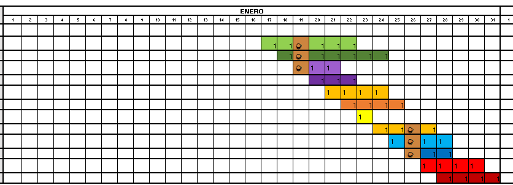

Descripción del Proyecto
Este archivo Excel fue desarrollado para gestionar planes de producción mediante un diagrama de Gantt automatizado con macros en VBA. El objetivo es visualizar y comparar el tiempo estimado y real de las operaciones por departamento.
Las principales funciones de esta herramienta son:
- Planificación: Se ingresan fecha de inicio y duración estimada por operación. El sistema genera visualmente las actividades en un calendario horizontal por días.
- Días hábiles: Solo se consideran días laborables, y los domingos se marcan con una taza de café ☕ y fondo color café para indicar descanso.
- Comparación: El sistema también permite registrar el tiempo real que tomó la actividad, para comparar contra lo planeado.
- Automatización: Cada bloque (tabla) de actividades se puede duplicar fácilmente y mantener organizado. También se limpia y actualiza la visualización con un solo clic.
Esta herramienta mejora la planeación de producción, ayudando a visualizar retrasos, cuellos de botella y desempeño por áreas.
Galería

